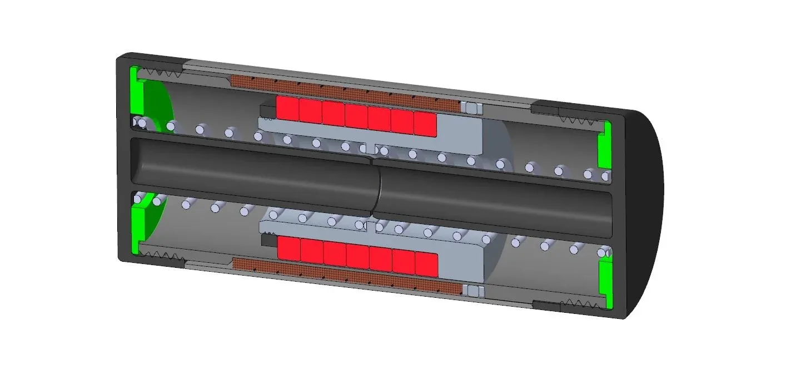
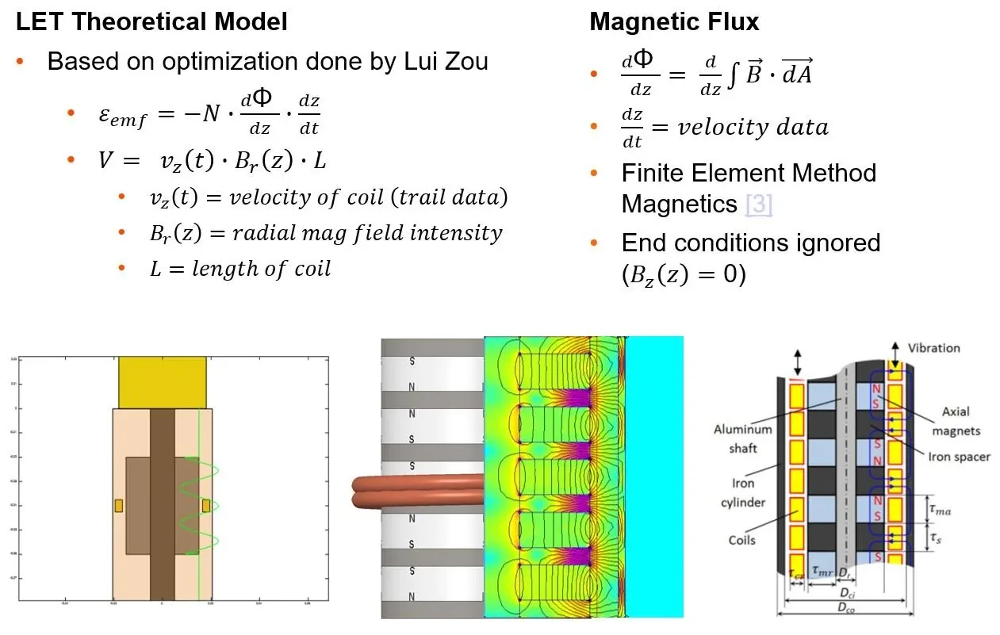
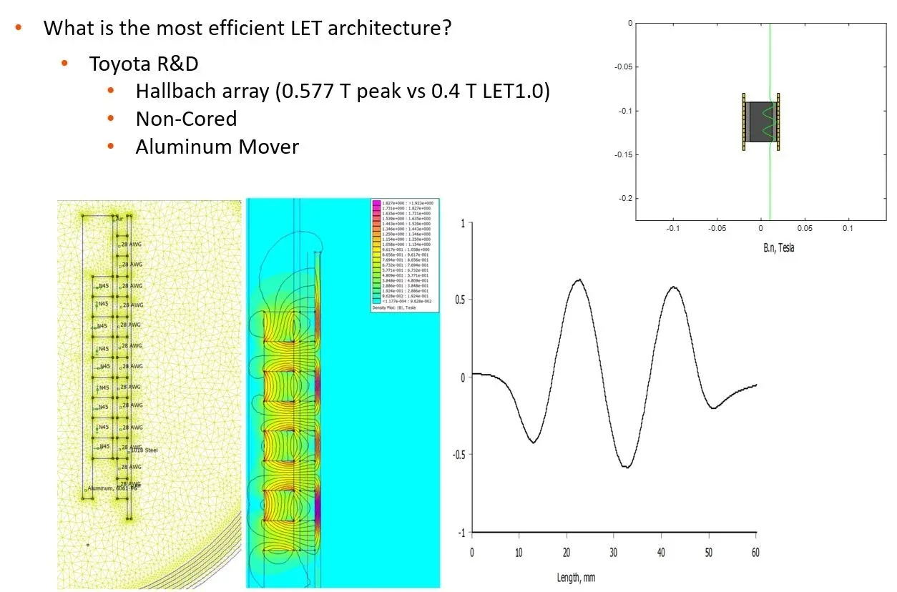
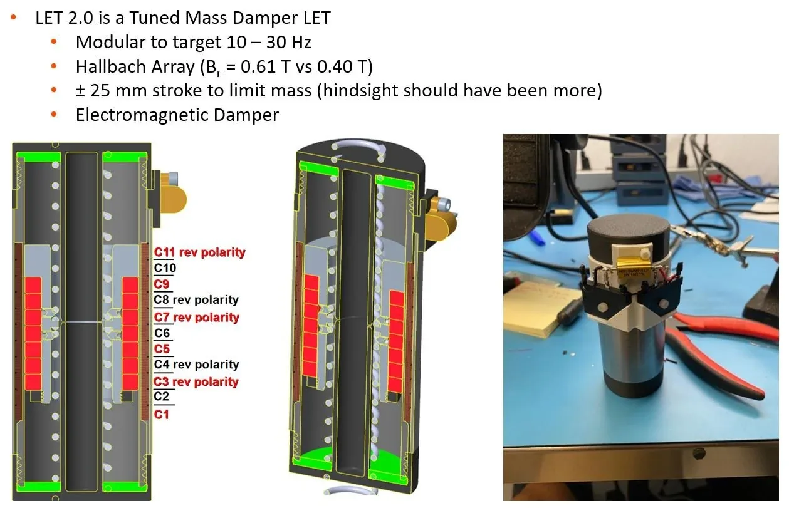
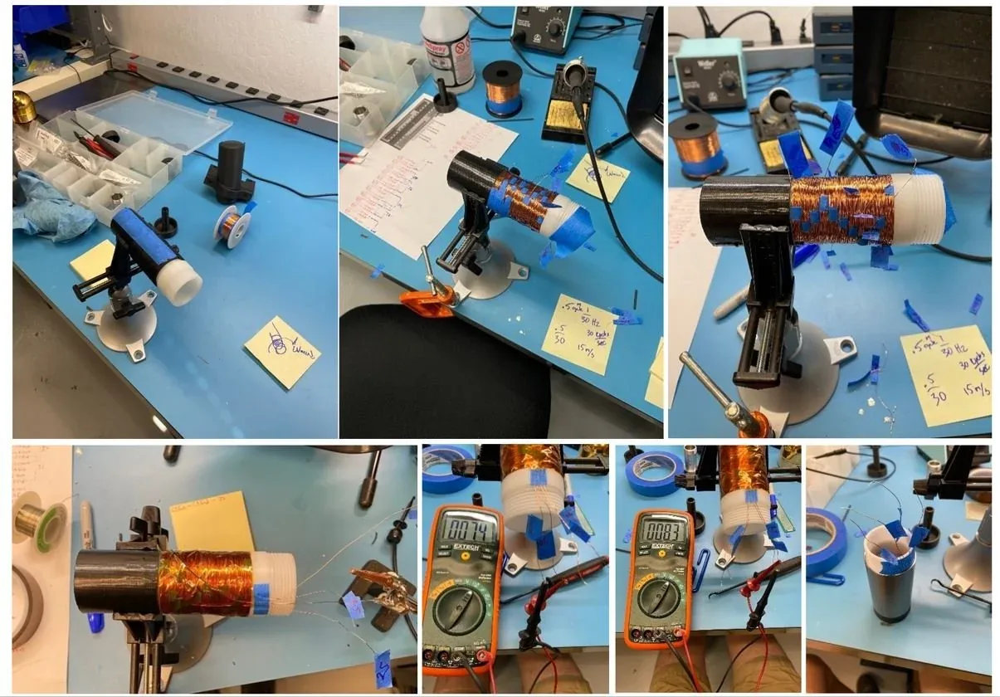
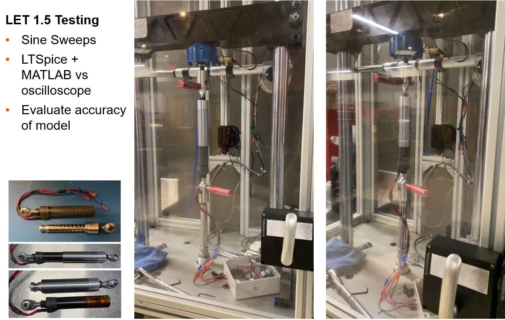
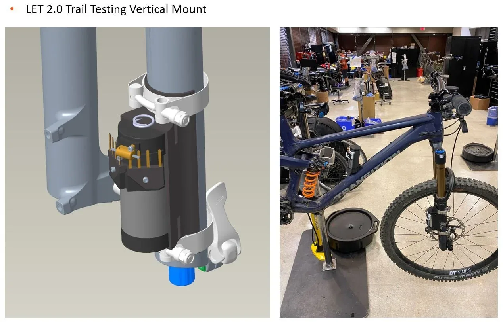
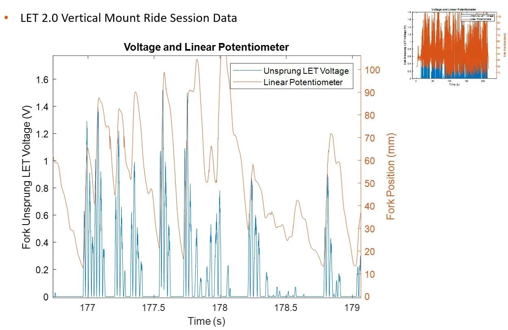
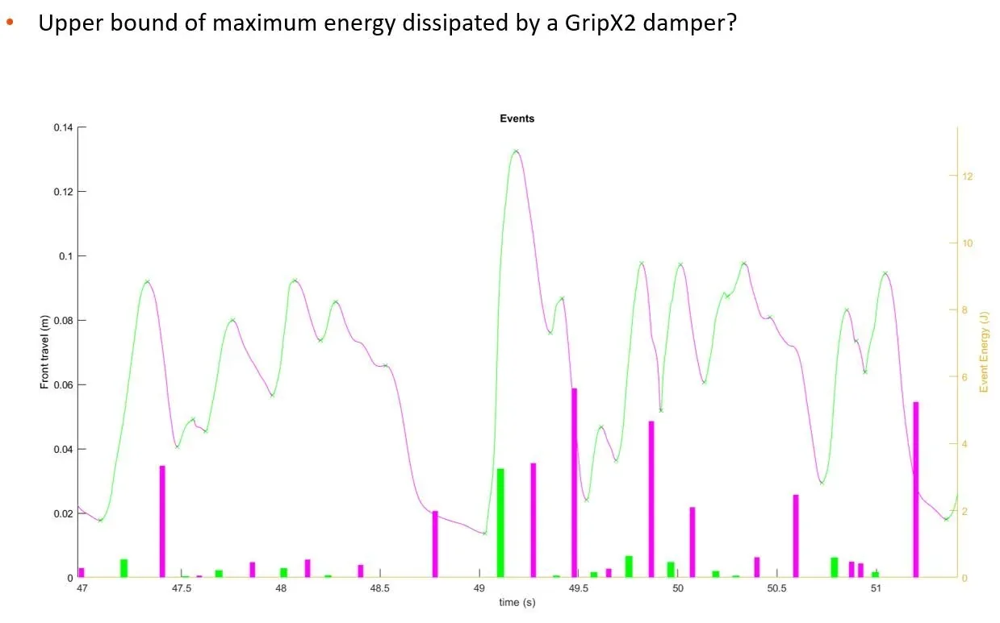
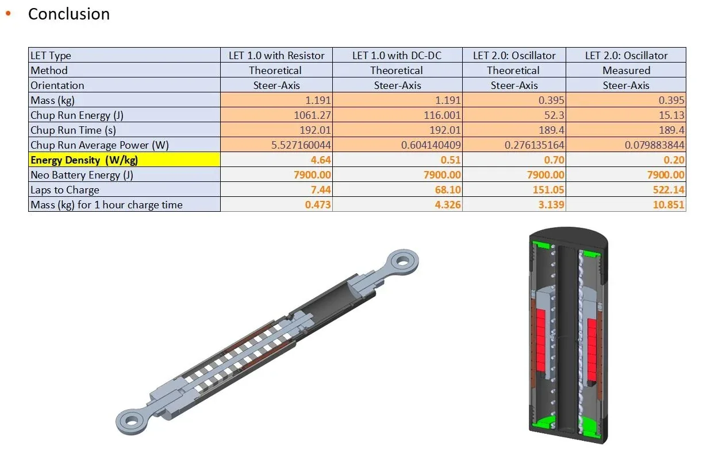

Mechatronics — LET
The LET (Linear Electromagnetic Transducer) was a research program asking a simple question: can the motion a mountain-bike suspension already dissipates be turned into useful electrical power? Two prototype generations took it from proof of concept to a trail-instrumented answer.
The transducer is a coreless linear generator. LET 2.0 uses a cylindrical Halbach magnet array on an aluminum mover, which directs the magnetic flux radially across the coils and removes the need for a steel core. A 1,500-point FEMM magnetics model fed a MATLAB model of the device; peak radial flux climbed from roughly 0.4 T on the first prototype to 0.577 T, and 0.61 T on the refined LET 2.2 magnet arrangement.




Beyond the generator itself, the program meant building the supporting hardware: two-phase rectified coil sets, voltage-divider circuits to keep velocity-dependent voltage spikes inside a logging window, and enclosures for the battery and logger. The device was characterized on a dynamometer and then run on the trail in both fork-mounted (position-dependent) and tuned-mass-damper configurations.




The most useful result was a limit. By treating the maximum harvestable energy as the energy the damper already dissipates, the study put a ceiling on the whole idea. A free-to-oscillate tuned-mass-damper LET generated several times more energy than a fork-position-dependent one — but even at that, charging a small Live Neo battery would take many descents, and a real device (generator, one-way clutch, gearbox, power electronics) would add roughly 600 grams. For an industry that fights for 50 grams on a crown, the conclusion was that the weight and feel cost outweighs the energy — a clear-eyed feasibility call backed by real numbers.

